⁵ᵉ⁹ by Khalid
Cybersecurity & AI
Fine-tuning thingsAbout
- I lead cybersecurity teams in bridging Red and Blue Teams, delivering impactful Purple Team operations, designing AI-driven detection use cases, and integrating actionable threat intelligence.
Connect
GitHub Activity

Projects
Notion-powered site, deployed via GitHub Pages
A Loconotion-based template that turns a Notion workspace into a static site, deployed automatically through GitHub Pages.